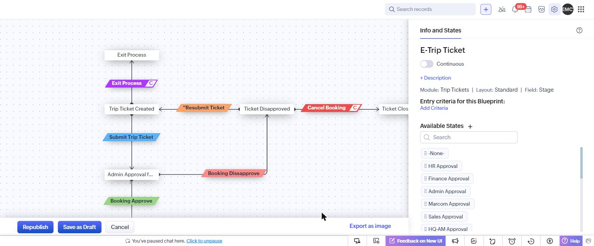
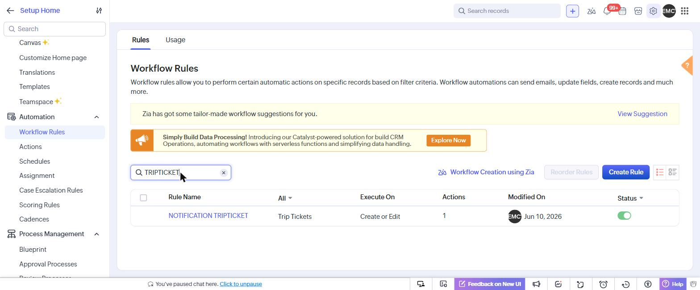
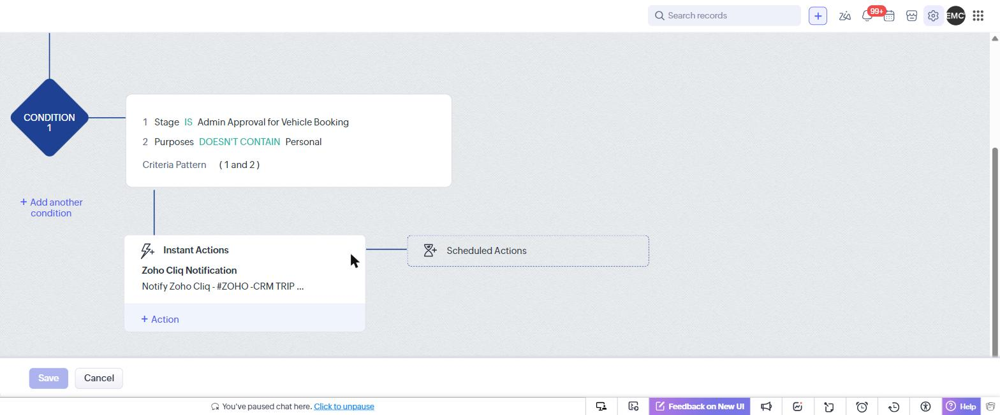
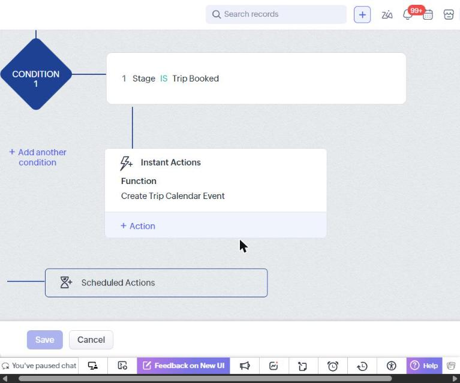
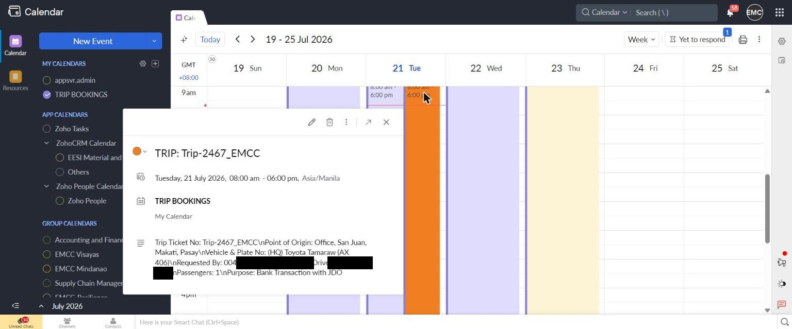
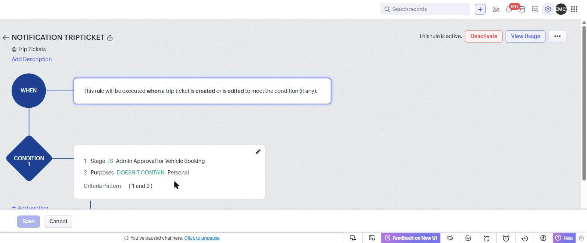

I design, build, and administer Zoho CRM implementations end to end — custom modules, Blueprints, Workflow Rules, Deluge automation, and chat-ops integrations that run in production for multi-department organizations.
Live architecture and automation audit of a real, production Zoho CRM Enterprise org (EESI Material and Controls Corp — EMCC), covering every module, workflow, and integration.
End-to-end Zoho CRM implementation and administration — not just pipeline configuration, but procurement, field service, finance, HR, IT asset management, and QA/safety modeled inside one CRM.
Structured, repeatable data capture across departments — 49 custom modules and ~70 subforms built for real operational data, not just form fields.
Stage-gated business processes across sales, procurement, service, and finance objects, with entry criteria, transitions, and common-transition patterns.
Reference numbering, cross-module automation, calendar integration, and data-hygiene functions running in production — 36 active in this org alone.
Field updates, email notifications, function calls, and real-time Zoho Cliq chat notifications combined into one coherent approval pipeline.
Zoho Cliq notifications wired into Workflow Rules so approvers get a fully-populated approval card the moment a request reaches their stage.
Profile and role hierarchy design aligned to a real organizational structure spanning multiple regional offices.
Beyond field service and operations, the same org runs its full quote-to-cash pipeline in CRM — from opportunity through order intake, invoicing, and reporting — all reviewed directly via the Zoho CRM metadata API.
96 active fields (74 custom), 2 subforms — Standard layout. A full quotation/bid pipeline rather than a generic sales stage tracker — stages include Receipt of Inquiry, Pre-Bid Survey, Technical Proposal Submission, Commercial Proposal Submission, and Solution Design, plus scope, product group/sub-group codes, quotation type, revision numbers, Incoterms, and payment terms.
68 active fields (54 custom), 2 subforms — "Order Intake 2026" layout, the current active layout (last updated May 2026). Custom module that picks up a won opportunity and tracks it as a confirmed order — customer PO number, PO received/acknowledged dates, target delivery, and gross profit calculated per business unit (FDG, PMFC, ECC/Sales, PAS, MCCP), with sales-credit-split fields for multi-team commission attribution.
38 active fields (24 custom), 1 subform — Standard layout. Custom module covering the invoicing lifecycle — Invoice Date/Due Date, TIN, Tax Code, VAT (12%), Aging, Date Collected, and an "Invoice Information" subform lookup — giving finance a single source of truth from PO to collection.
Native Zoho Analytics/Dashboards layer built on top of the Opportunities → Order Intake → Sales Invoice chain, giving management rollup visibility (pipeline value, order GP by business unit, invoice aging) without needing a separate BI tool.
A dedicated custom "Ticketing System" module — a real internal helpdesk, not a repurposed Cases module — running two parallel service tracks under one intake form.
77 active fields (64 custom), 1 subform — Standard layout. Every ticket is classified by Ticket Classification (ECC – Service Request, ECC – Quotation Request, or MIS Technical Support) and then routed down one of two independent stage pipelines:
| Track | Stage flow |
|---|---|
| ECC Stage | Open → Start and Evaluate → Service Request Accepted / Preparing Quotation → Assessment On-going / For Customer Acknowledged → Customer Acceptance → Closed (Service Completed / Quotation Submitted / Request Cancelled) |
| MIS Stage | Open → Review Service/Asset Request → Servicing On-going / Processing PR / Processing PO → Acknowledging Service Report / Preparing New Asset → Closed (Resolved / Asset Issued / Cancelled) |
Requestor Type (Sales Engineer / Customer / Employee), Requestor Region (HQ / Visayas / Mindanao), Business Unit (Field Devices, Control Products, Analytical & Safety, Direct Inquiry), Warranty Status, and Service Level (Basic / Moderate / Complex) drive routing, while Ticket Controller, Assigned Engineer, Recommended Service Engineer, and Reviewed By fields keep ownership and escalation traceable end to end. A post-resolution Rating field (Excellent / Good / Bad) closes the loop with customer feedback.
A single custom module (company vehicle/driver dispatch requests) combining a Blueprint, four Workflow Rules, a custom Deluge function, and a chat-ops integration into one coherent approval process — audited directly in CRM Setup.
Stage-gated flow with entry criteria and side paths for rejection/cancellation:
Booking Dissapprove / Resubmit Ticket / Cancel Booking route back out. Every transition was opened and inspected directly, including two Common Transitions (Cancel Booking, Exit Process) reachable from multiple states.
| Rule | Trigger / Condition | Action |
|---|---|---|
| Stage Restriction | Stage IS "Trip Ticket Created" | Field Update — Stage Value |
| Automatic Date Approved | Stage IS "Trip Booked" / "Trip Ticket Created" | Field Update — stamps Date Approved / Date Requested |
| NOTIFICATION TRIPTICKET | Stage IS "Admin Approval for Vehicle Booking" AND Purposes doesn't contain "Personal" | Zoho Cliq Notification to #ZOHO-CRM TRIP TICKET APPROVALS — posts a fully formatted approval card |
| Auto Create Calendar Event on Trip Booked | Stage IS "Trip Booked" | Calls the Deluge function "Create Trip Calendar Event" — auto-creates a Zoho Calendar event |
The moment a request reaches "Admin Approval for Vehicle Booking," approvers get a fully-populated approval card — requestor, purpose, travel dates, vehicle, driver, passengers, destination, ticket no., and cost fields — posted directly to a dedicated Cliq channel, without needing to open the CRM record first.
The instant Stage flips to "Trip Booked," a Workflow Rule calls the "Create Trip Calendar Event" Deluge function, which reads the ticket's travel dates, destination, vehicle, and driver/passenger fields and creates a matching Zoho Calendar event automatically — closing the loop end-to-end: submit → approve → notify in Cliq → auto-schedule on the calendar, all off one Stage field, with zero duplicate data entry.
Verified directly in Zoho CRM Setup, not just reconstructed from API metadata. Personal names have been redacted for privacy.






Available for Zoho CRM implementation, automation audits, Blueprint/Workflow design, and Deluge development.
jdglaurel@gmail.com